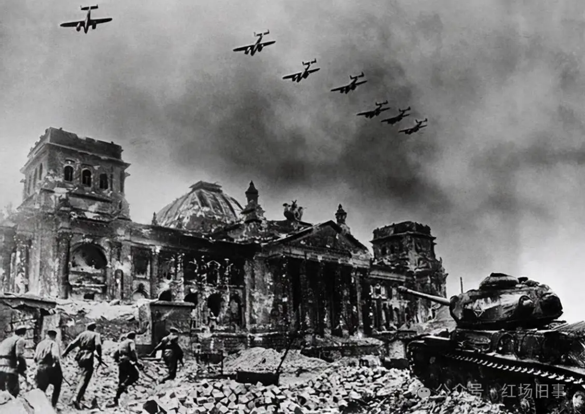
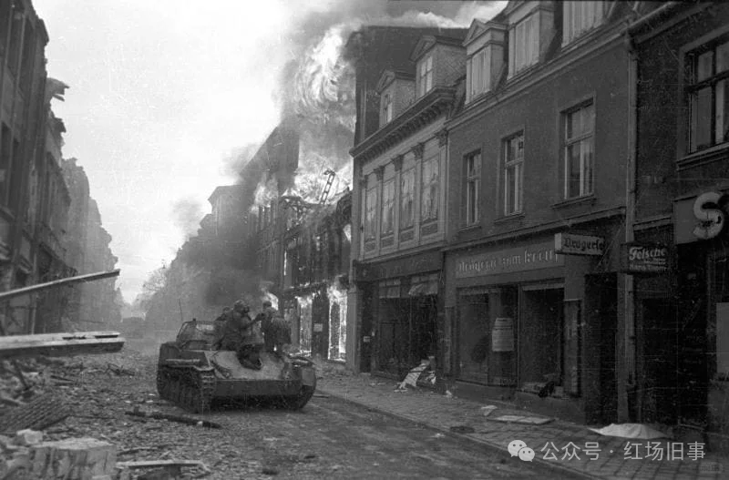
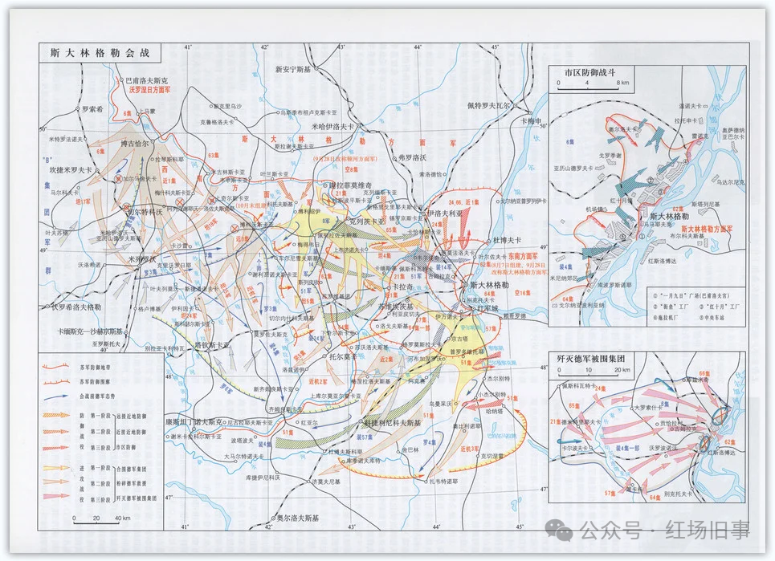
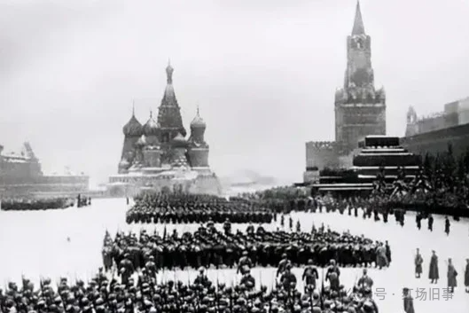
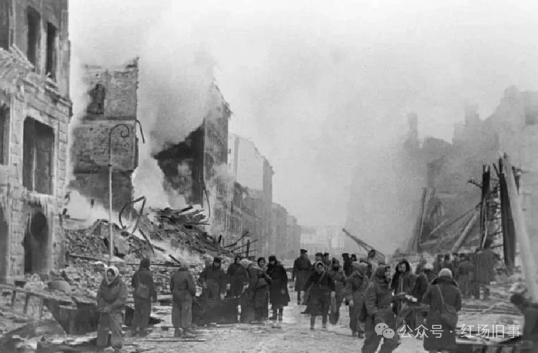
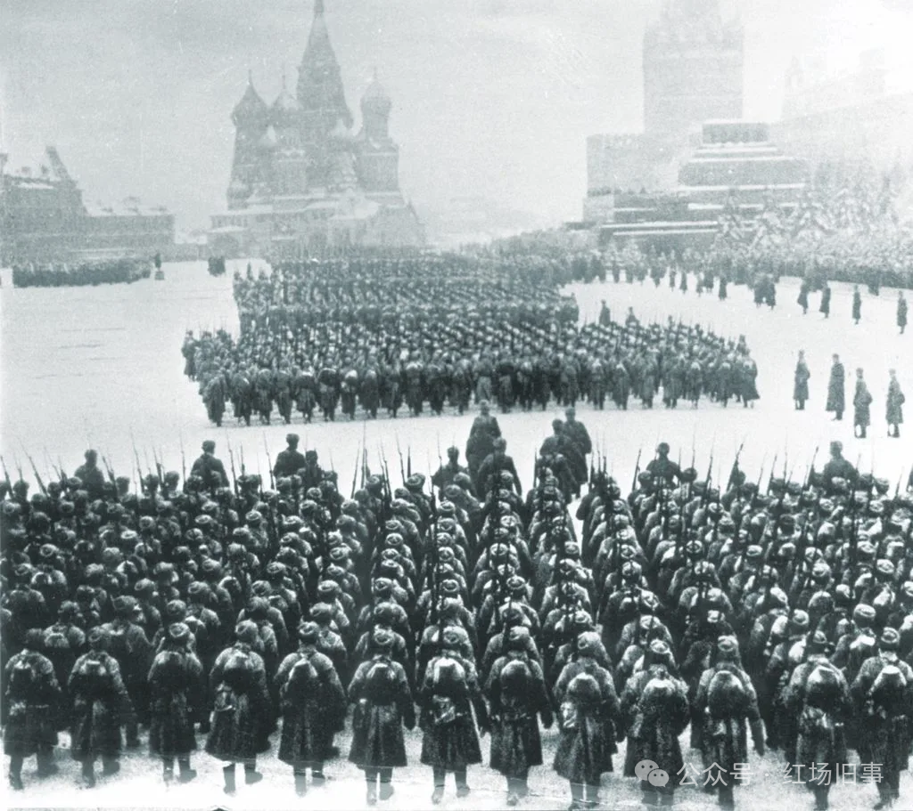

从66万俘虏到红场阅兵：莫斯科城下那180天，苏联经历了什么？
文字与图片版权归各自权利人所有。 查看公众号原文 ↗
凌晨3时30分，布列斯特还在沉睡1941年6月22日凌晨3时30分，炮火覆盖整个布列斯特要塞。德军550万大军、3580辆坦克、4980架飞机从波罗的海到黑海全线压境。战争第一天，苏军损失战机约1200架——其中近900架整整齐齐排列在跑道上，来不及起飞便化为废铁。边境军区通讯中断，指挥瘫痪。莫斯科直到7时15分才下达“猛烈反击”命令，而前线部队已在溃退。一周后，明斯克失守，30万苏军被俘。三个月后，基辅城下，66万苏军陷入人类战争史上最大包围圈。1941年下半年，苏联需要用2000万条生命、1710座城镇废墟、3.2万家工厂东迁来消化这场溃败。

这绝不是德军“太强”可以解释的。
一、“无头巨人”：大清洗留下的那道裂痕希特勒对将领说：“斯大林做了我想做却做不到的事情。”1937至1938年，3.5万名苏军指挥员被处决。5位元帅去3，16个集团军司令去15，67个军长去60，183个师长去137。图哈切夫斯基——深度战役理论奠基人——从被捕到执行死刑仅用两小时。填补真空的是谁？西南方面军司令员基尔波诺斯上将，两年前还只是个团长。一年内连升四级，从团长到方面军司令。战术素养停留在指挥一千人的水平，却要指挥75万大军。希特勒称苏军为“无头巨人”——600万军队，找不到头颅。新上任的军官除了会喊“斯大林同志万岁”，几乎什么都不会。1941年苏芬战争，75万苏军竟无法征服总人口200万的小国芬兰。战争是残酷的考官，它从不接受“我没学过”作为辩解。
二、溃败拼图：误判、脱节与来不及第一块：战略误判。斯大林坚信主攻方向在西南——乌克兰的粮食、顿巴斯的煤、高加索的油。苏军主力部署在乌克兰，莫斯科方向防御薄弱。结果中央集团军群一路杀到斯摩棱斯克，距莫斯科仅300公里。第二块：装备与思想的代差。战前苏联已有29个坦克军，但战术思想停在上一代。命令无法下到一线，协调无从谈起，坦克被分散配属，既无集中突击，也无纵深作战。第三块：不会撤退。战前苏军竟然没研究过如何退却——这在任何国家军事条令里都不可思议。一退即溃，一溃即散，成建制的部队不是战死的，是“围死”的。
三、基辅：史上最大围歼战，以及那场著名的争论1941年7月底，朱可夫走进斯大林办公室。地图上两个铁钳正在合拢：古德里安第2装甲集群南下，克莱斯特第1装甲集群北上，将在基辅以东200公里合围西南方面军。朱可夫说：“必须放弃基辅，将部队撤过第聂伯河。”斯大林说：“你在干什么？把基辅留给敌人？”朱可夫说：“如果你认为我这个总参谋长只会胡说八道，请解除我的职务。”两小时后，他不再是总参谋长。9月26日战报：西南方面军覆灭。司令员基尔波诺斯阵亡，65.2万人被俘。德军伤亡13.2万。

这是人类战争史上规模最大的围歼战。斯大林错了吗？军事上，答案是肯定的。但历史从不只有军事。1941年7月，日本正在“关特演”名义下集结70万兵力。如果苏军放弃基辅、暴露败象，谁能保证日军不会8月北进？斯大林需要时间，需要让日本看到“苏联还在抵抗”，需要把战争拖入冬季。同样是7月，罗斯福私人代表霍普金斯正在莫斯科。美国决策层普遍认为苏联撑不过三个月。如果此时苏军放弃基辅，霍普金斯会带着什么结论回国？租借法案还会不会存在？这些，不是一张军事地图能回答的。
四、莫斯科城下：纳粹第一次停下1941年9月30日，“台风”行动启动。目标：莫斯科。

博克元帅集结100余万士兵、1700辆坦克、2000架飞机。10月初，德军在维亚济马—布良斯克完成双重包围，又一个60万人的包围圈。莫斯科告急。10月15日，部分政府机构迁往古比雪夫。斯大林留下。10月19日，莫斯科戒严。45万人修筑工事，四分之三是妇女。此时，德军遇到三个意想不到的对手。第一：苏联的道路。雨天泥潭，车辆油耗翻倍。轨距危机——苏联宽轨，德军机车无法行驶。8月推进到斯摩棱斯克时，最近的铁路补给站在数百公里外。到1941年底，德军后勤部门仅剩25%的汽车可用。第二：时间。基辅战役为德军带来66万俘虏的胜利，也把进攻莫斯科的时间整整推迟了一个月。这一个月，被朱可夫用来重建防线，被斯大林用来等待西伯利亚援军，被冬天用来逼近莫斯科。第三：冬天。12月初，莫斯科气温零下20至30摄氏度。德军没有冬衣，坦克机油凝固，光学窥镜失灵。苏军穿着英、美援助的150万双军靴，习惯了寒带作战。11月7日，红场阅兵如期举行。斯大林站在列宁墓上：“我们的事业是正义的，胜利一定属于我们！”受阅部队荷枪实弹走过检阅台，直接开赴前线。

波多利斯克军校3500名学员，奉命在伊尔斯金防线阻击德军坦克。命令是坚守5至7天。他们坚守12天，2500人永远留在阵地上。12月6日，苏军从莫斯科南、北两翼反攻。1942年1月，德军被击退100至250公里，损失50余万人、1300辆坦克。这是第二次世界大战以来，德军第一次战略性撤退，第一次大规模失败。闪电战的神话，在莫斯科城下40厘米厚的积雪里，碎了。
尾声：那167天从1941年6月22日到12月6日，整整167天。

这167天里，苏联丢了150万平方公里国土，损失超过400万军队——开战前总兵力的三分之二。但这167天也证明了一件事：希特勒可以在三个月内征服法国，却无法在六个月内征服苏联。斯大林在基辅输掉了战役，却在莫斯科赢得了时间。那一个月的时间差，是66万西南方面军将士用生命换来的。他们被围困、被俘虏、被歼灭，但他们让德军在乌克兰泥泞里多停留了三十个日夜，让西伯利亚援军多赶了三百公里铁路，让莫斯科妇女多挖了十万米反坦克壕。朱可夫说得对：放弃基辅是军事上的正确决策。斯大林做得对吗？这个问题，交给1941年12月那个站在红场风雪中的士兵来回答。

他知道自己身后没有退路，也知道这半年为什么会输得这么惨。但他依然走过阅兵台，依然高喊“乌拉”走向前线。因为那是莫斯科。因为除了胜利，苏联已无路可走。